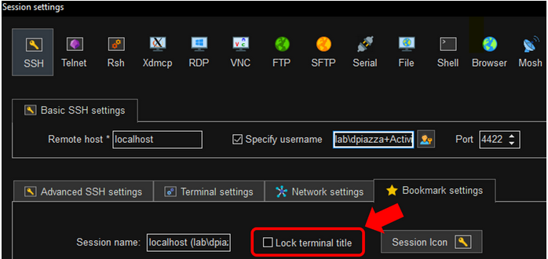
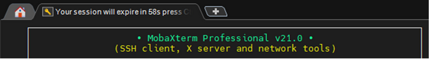

Summary
SbPAM’s SSH Session Extension countdown does not display in the MobaXTerm tab bar unless a specific option has been disabled in the MobaXTerm session’s Bookmark Settings.
Instructions
As shown in the screenshot below, the SSH session’s “Lock terminal title” setting should be disabled in the session’s Bookmark Settings within MobaXTerm (right-click the session in MobaXTerm’s Sessions sidebar, click Edit Settings, and navigate to Bookmark Settings).

If configured correctly, the session tab displays session expiration countdown messages per the settings in the SbPAM Connection Profile assigned to the Access Profile granting the user the right to use the SSH Activity.
